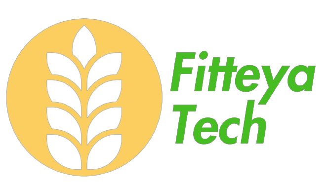

Início
Sobre nós
Contato
Nossa história
Calculadora Financeira
Qual é o seu nome?
Quanto trigo você perdeu na úlitma safra?
Toneladas
Quilogramas
Sacas
Quantos hectares você planeja plantar na próxima safra?
Calcular perda